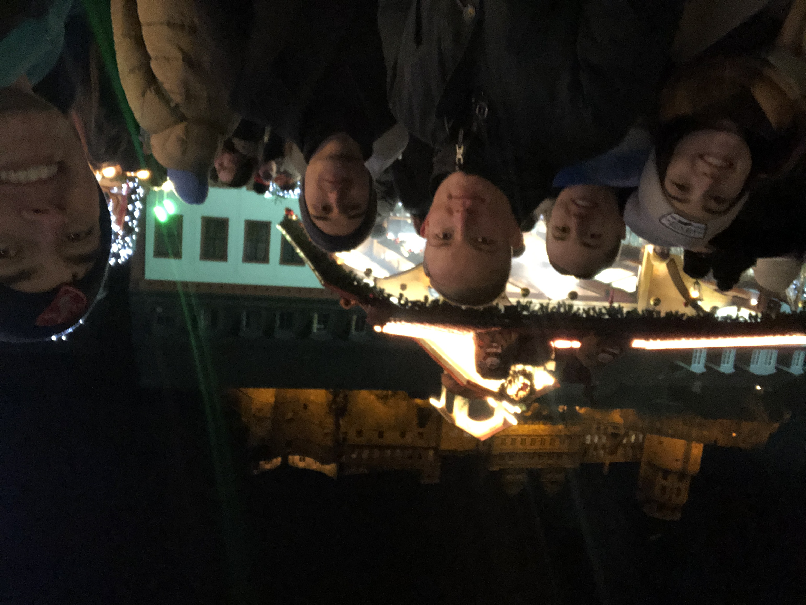
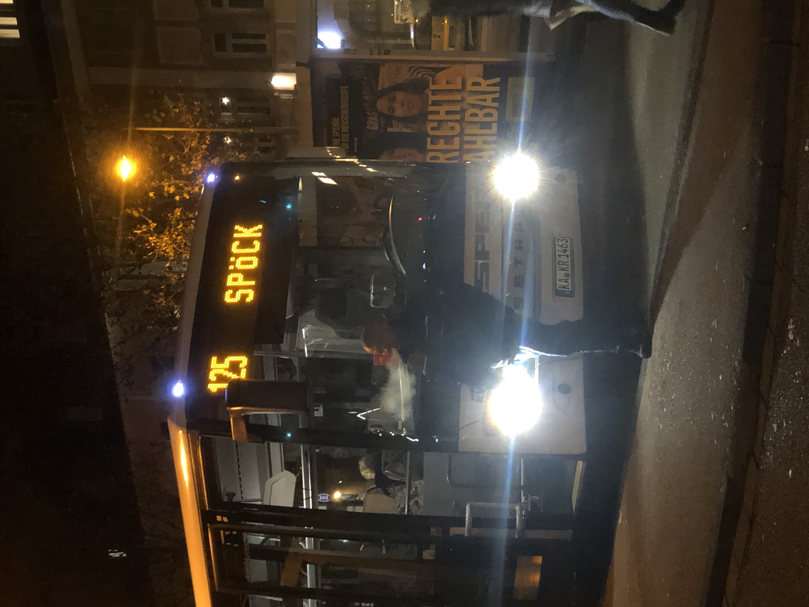
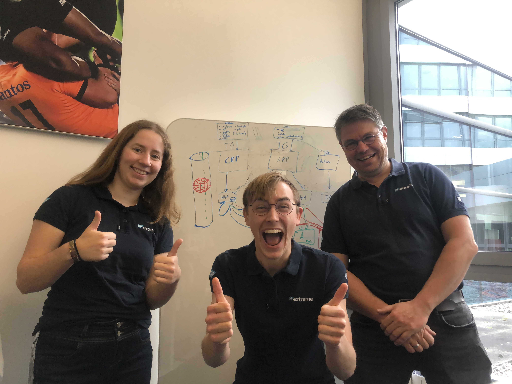
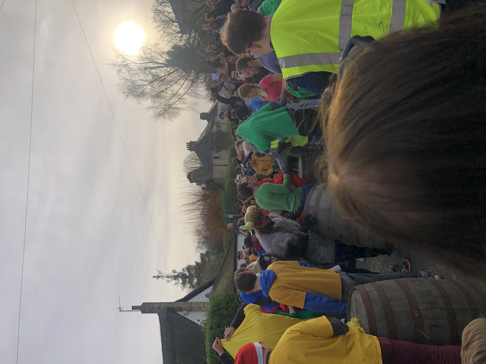

In the first week of December, I ate a lot of cabbage.. spicy cabbage, balsamic cabbage, spinach+onion (with cabbage), braised sweet cabbage, cabbage curry and cabbage soup. The week was tough from a work perspective but also engaging (especially when we put on Christmas music). However, I was grateful for the Friday night Glühwein: after work, Lisa and I rushed around trying to catch the first bus, and accidentally took a rather long, but certainly adventurous, route (via the train station 😂). We rendezvoused at the local Weihnachtsmarkt, which was well stocked with crafty gifts, delectable food and warm drinks. There was an excellent choir and hearty fire.
On the Saturday, James and I started work on finding some Christmas gifts, then I had a walk and went to yet again a Weihnachtsmarkt, this time with the student community, to Heidelberg. I met some wonderful folks, also got to chat more with Mark, and enjoyed the Christmas spectacle.
On Sunday, I awoke and headed to the Christmas market. Not really ;) That comes later. I did some exercise and had a good family catchup And then I headed to the Christmas market with Lenard, Lisa, Sebastian, Can and Niklas (with whom we baked cookies/Plätzchen). We were joined by Lenard and his partner Sofia. I later headed to play tennis, with Karl-Heinz, Petra and Jula. Luckily, we moved to indoor courts, as opposed to the outdoor clay pitches, we had previously played on. We had some brilliant sets! An unusual, fun and fit way to end the week.
It's bizarre how much of a glow things have in December :) but I am glad they do! The week started quietly with a killer gym session, where I nearly fell of the treadmill (twice). I responded to some mail and worked on this site. On Tuesday, I entered the zone, and was really motivated. After a brilliant dance class, I returned to the office to finish the dreaded bug5914. I was automating the switch between the primary archive server and a failover, which should happen when the primary is in an "unhealthy" state.
On the Wednesday, was Johanna's event. A few team members aided with tickets, speaking, etc. I was on the door with Lisa, Sebastian, Jonas and Jan, plus some other students. The event was a success and people seemed pretty happy; although, as always, there were things we forgot about or didn't think of, so some important lessons were learnt. For example, many people had received notification of entering the prize draw, for entrance tickets, and arrived on the day, believing that receipt to be an entrance ticket. We had to devise a coordinated way to handle this and to try to let some of these folks in, if other ticket winners turned up with less people than they had initially told us.
Afterwards, I went for a long run to finish listening to the album "In the Court of the Crimson King", which Will had recommended. Things got pretty tight though as my destination was a train station, and I had to really push it (real good) to catch the last train back 😂. The train driver was a little shocked to see me and so was I when I saw my reflection as I was soaked in sweat.... and BLOOD, as my cheek had been gashed on a thorn.
Not to worry, I had a nice chat with James after :)
Fun fact: The Great Spotted Woodpecker's tongue is so long that it curls around its skull and is utilised as a harpoon to pull larvae out of trees! They also peck at a rate of 20 drums per second.
Thursday began like any other, but ended quite unlike any other... I merged in some major changes for automating the archive failover (bug5914) at work ready for our team meal in the evening! Axel and I set off with plenty of time, eager to settle the age-old score by beating the machines with our bicycles!! Unfortunately, whilst my head was protected, I couldn't see, for I had forgotten my light. A combination which was, in fact, more dangerous than Axel's, who had all the lights but lacked a helmet.
We stuck together through the streets of Walldorf, naturally running all the reds and nearly killing multiple pedestrians! Finally, we made it to the "cover" of the woods, where we zigzagged along dark paths, until we emerged onto the main road to the restaurant. But, as we descended a bridge I was blinded by oncoming headlights and had to break heavily, meaning I lost Axel's tail light. I quickly fell further and further behind, until I was riding in the dark :( (sorry Mum). In the distance, I could see a blinking red dot. Oncoming cars initially seemed a blessing, until I was blinded again and again by them, as their lights were at just the wrong height.
Fear not though, as Axel kindly waited for me at the next junction and we rode in together upon our noble steeds (before anyone else, I might add). What followed was a lovely evening full of laughter, chats, plenty of food and many pints of water. On the way back, Lisa kindly fashioned a headlight, using my phone and a rag.
To wrap up the week, Mark and I made (you guessed it) Eggy bread and played lots of a card game called Cambio, which Emma and Ben taught me back in Southampton. On the Saturday, I gave T a call, went for a jog and in the evening Arne, Niklas, Niklas' sister, Can, Sebastian, Lisa, Arthur and I made pizzas!!! Beforehand, Arthur taught a few of us Durak, a Russian card game, and then we all headed to Can's and Arne's place. We had a hell of an operation, especially given the tiny kitchen we were working in. Afterwards we watched Forest Gump (with English subtitles), which was brilliant practice for me. We didn't finish until 1am though 😂.
On Sunday, I went for a jog and had a great catchup call with some of my cousins, filled with many laughs. In the afternoon, I cycled with Nico to Oberhausen. Our destination was a Brazilian tapas bar, which had live samba music. Nico's parents had driven there and we sat, chat and ate together. The atmosphere was so friendly and Nico even performed with the band! Later in the evening, Cian and I had a cracking call and then I went for Yufka-Döner with Lenard and Sofia. And then wrapped the weekend up by doing some reading.
The week took off at a sprint: on Monday evening, I made a pumpkin pie for the office and cooked heavily-marinated chicken and spinach burritos with Lenard. We had a really good laugh making them and there was thoughtful silence as we indulged in the final product, occasionally sipping from our cool beers (a generous gift from Karl-Heinz, who accidentally ordered the wrong type of beer 😂). I would really recommend serving every meal with these crispy chickpeas, which Lenard had bought👌
On Tuesday, I had a fabulous dance session, where I caught up with lots of people I hadn't seen in a while (the last session was so quiet). Afterwards, I made Spekulatius (a scrumptious cinnamon biscuit) with custard.
On Wednesday, I had a nice lunch in the office and tried my hand at being a "rubber duck".. (There's a popular technique in programming, where someone explains their code to a literal rubber duck. By describing the code aloud, one can often find issues and fix them.) In the evening, I made a curry for Manuel. It almost went completely wrong, when I poured in way too much salt, but was able to quickly remove the excess, before it was consumed by the sauce. Before this date in history, I lacked the ability to talk and cook, and that fact remains... Just kidding, I improved massively, which is good 😁 I taught him Cambio and then I cycled with him to the station, to say goodbye.
Upon my return I made meringues and practically sat in front of the oven, with my fingers crossed, hoping that they wouldn't collapse, weep, burn or explode (all of which have happened to me before — except the last 😉 ). I was pretty happy with them and on Thursday I made some vegan chocolate mousse for a colleague, which was fun. I also finally learnt Cribbage, which Michael kindly taught me. I think it is a little complicated at first and, due to the structure of the game, there is little time for chatting, but I really like it.
The day itself was quite productive, but lunch was slightly amusing as we had standing tables, in preparation for the SAP party in the evening. Even then, there were not enough tables, so Axel and I perched on a low wall, by the stairs. At about 4pm, we had some nibbles and it was nice to catch up with colleagues who I hadn't seen since the team party in September. We messed around with the label maker a bit and then we split up into smaller groups to explore the party! There were 4 separate locations where we could partake in the revelry: the main stage area (where we had had lunch), building 5, the jazz zone and drinks bar; building 3, which had the Queen tribute band and a photo booth; and the Weihnachtsmarkt (outside).
Axel and I wondered around the last location first, bumping into some of Axel's old acquaintances, colleagues and friends. We also saw Alvaro (Nico's Dad) and it was nice to have some one-to-one with him. The atmosphere was fabulous and I really enjoyed meeting friendly people, learning about the different parts of SAP and hearing others views and predictions about the company.
We then headed to the main stage for some food and then went onto building 3, where we bumped into Lisa. Later on, we bumped into some of the team and then I split off to find Paula (who I have weekly chat with) and Mark (Paula's friend and a member of the student community). Paula was the MC for the stage in building 3 and so we stayed there for a while, bobbing with the music.
Next, we zigzagged about and basically spent the rest of the evening bumping into people, snowballing into a pretty hefty group from the student community. I briefly ducked out to the office to chat with some of the team and to see Linus (Axel's son), and then rejoined the student community for the Queen tribute and finale at the main stage.
I then wandered home with Arne and Niklas (from the pizza night, who are both on the same scheme as Lisa).
On Saturday, James and I had a long call to sort the last gifts and I went for a jog to the traversing wall. In the evening, Mark and I went to the Bruchsal Weihnachtsmarkt, where we played lots of cards, enjoyed the music and tried the delightful Hungarian Langosh, as well as a scrummy Bratwurst! We continued our hot chocolate obsession and were not disappointed!! This market was cosier but seemed to centre entirely around food and drink 😂 We had a nice car-karaoke session afterwards too.
On Sunday, Nico and his family, very kindly took me to Straßbourg, to see the magical Weihnachtsmarkt there. There are four or five separate markets on the island there, each with a different atmospheres and themes: some selling hand-crafted gifts, such as these wonderful metal figures or decorated marzipan bites, others focussing on food or on drinks. Nico and I split off together, from his parents, but we bumped into each other again in a warmer tent. This was one of my favourite markets as the surroundings were stunning and there was a real breadth of stalls. We even had time to go inside the mighty cathedral/dom.
Nico and I with a big barrel
Tasty marzipan bites
Amazing model stall
The Monday morning was a little stressful, but I was able to go for a lovely lunch with Can, Arthur, Niklas and Lisa, which was a lovely penultimate (vorletzte, in German) meal. Later in the afternoon, we had a marvellous baby shower for Isa and Chrissy.
In the evening, Lenard and I made pizzas and then Niklas, Arne and Can came round for some rounds of Schwimmen, which was hilarious, especially as Can seemed to win every round, without seeming to understand the rules. The next day, after a quick team photo, I headed to the train station. On the platform, I peeled and wolfed down my breakfast, lunch and dinner: a single boiled egg. I got some odd looks.
I then had an uneventful ride and made it to Köln where I boarded my plane and had some lovely games of Cambio, with a lady called Alex, who is a true adventurer! She is always travelling and makes sea and wildlife documentaries. After landing, I had a nice conversation with a lady, in German, on the bus to Bristol.
After a long day travelling, I arrived at Will's place and we chatted until 3am. I then fell asleep. The next day, we played some games and explored the Bristol Christmas market. We had a great catchup and sampled lots of cheese 😂 I then caught the train back and went to see a panto with Adam, Mel, Chloe, Sophie, Mum, James, Granny and Dad. Sleeping Beauty was pretty entertaining and included some sketches I hadn't seen in a while, such as the 'Boxer, Joker, Police officer, chef' sketch, where various props come dangerously close to vital organs. But, in my opinion, the story of Sleeping Beauty is a difficult one to be convert to a pantomime, and they relied on a lot of scenes/sketches from the previous year.
I worked for the last days of the week and had a catchup with the Puris (sadly minus Kieran). We mainly chatted and it was great to hear, after such a long time, how they were all doing. Cian and Jon came round on the Friday: we played some games and made a cocktail, and then we headed out. Whilst "out", we bumped into Thea and Finola, as well as Carter, Jayden, Matty and Bogdan. We stayed in McKenzies for a while and then headed to the Vic (where we bumped into Oscar and Jacob!). We all had a really great catch up and were introduced/reintroduced to some of Finola's friends. A cracking evening!
Over the weekend, T, James and I went for a great mince pie + hot chocolate and we all decorated the tree. Tom and I tried some of the best wings ever and some great DJs were playing next to the Gurt Wings food truck too. Cian and I went for a great run and chat on the morning of the 24th. Then I got stuck in helping with jobs.
The Christmas holidays themselves were lovely: we had a fabulous time. We all played lots of games, had fun cooking (as well as being cooked for), chatted, went walking and laughed a lot. I went on a few nice runs too and throughout the holidays felt extremely warm and very happy. Thanks to all those who made it so special.
I met Tom for a cold walk and a warm coffee (Tom knows all the good spots); played a fair bit of Crib with Mum; watched Sixth Sense and They Cloned Tyrone (both brilliant!); made Gumbo with Mum, which took agggges; and watched an exciting Forest game in the pub.
On the 31st, we had a great afternoon with the Reading Bazeley's, playing Charades, Throw Throw Burrito (just as wacky and brilliant as it sounds) and this charming Sumo Squats game. After they headed off, we had a tidy up and then Granny and Grandad came back round for some games of Hearts and to consume the Gumbo.
Then Jon and I headed to McKenzies, where we immediately saw Tyler, his partner, Alex and Sam, as well as the usual suspects behind the bar (Carter), plus Maia. We stayed for a while in the buzzing atmosphere, before departing for Tree, but we had no tickets so instead turned 180° and headed to Longs, where we tried various frightfully tasty cocktails: Russian Spy (basically a milkshake) and Cosmopolitan (Cranberry and Orange). Tyler and Meg headed home, whilst Sam, Jon and I went to the Vic, where the backroom had this legendary trance DJ. We bumped into some familiar faces including Ben, Finn and Hannah. Then we walked around a bit, bumping into Kieren, before having a lovely chat with Luca and Joe, on the pavement opposite Dominos, for over an hour. Then we all walked home together. A fantastic New Years!
The 1st was a quiet day: we finished a movie and played lots of cards. On the 2nd, I worked and then flew back to Germany, staying the night in a youth hostel. Unfortunately, my fear of missing the 7am train meant that I barely slept. I eventually decided to take the 5:30am train and I actually made it into the office at 10am! That was a tough day, but I was back and eager to take on January...